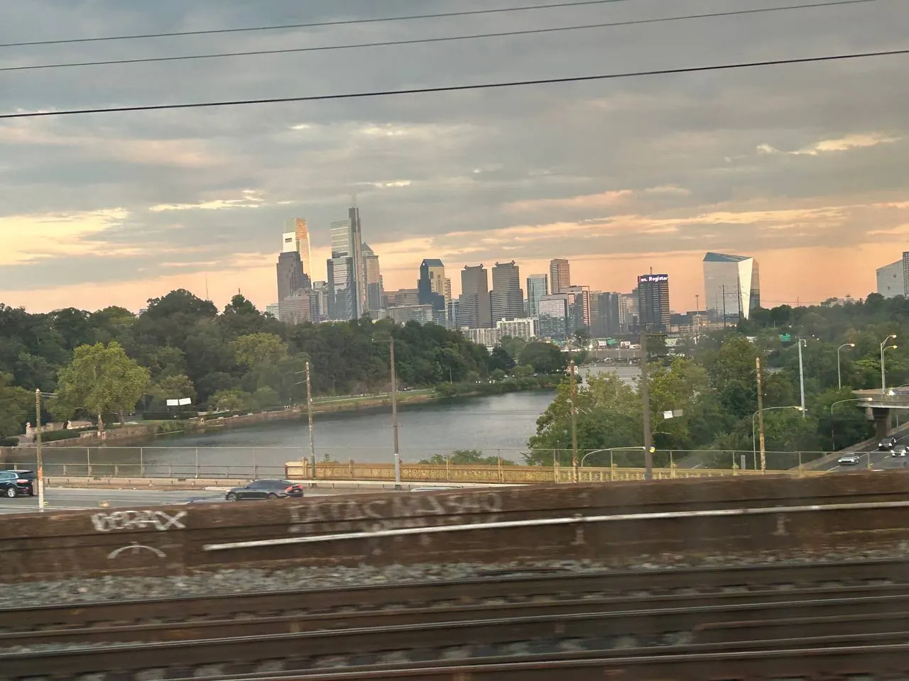

Day trips from New York
Six trips, one rule: the good ones are under two hours each way. Here is what each costs, how long it really takes, and which deserve a night away instead of a return ticket.
Two hours is the line
A day trip works when the journey is under about two hours each way. Between two and four hours it becomes a long day with an early start. Beyond four hours you are not taking a day trip any more — you are taking an overnight and calling it one.
That single rule sorts this list quickly. Philadelphia and the Hudson Valley are easy days out that leave you an evening in New York. Washington is possible if you leave early and accept that you will see a fraction of it. Boston, Niagara Falls and Atlantic City are better with a night — Niagara Falls needs one, since the train runs once a day.
Fares below are adult round trips checked on 2 November 2026. Amtrak prices are dynamic and rise as trains fill, so book ahead where you can and treat every figure as an estimate.
Six trips, in one glance
Journey times and round-trip fares are for the fastest sensible option. Verdicts assume you are leaving after breakfast and want to be back the same night.
| Trip | Journey | Round trip | Day-trip verdict | Best day |
|---|---|---|---|---|
| Philadelphia | Amtrak 1 h 05–1 h 25; NJ Transit + SEPTA about 2 h 15 | $40–$150 by Amtrak; about $50 by NJ Transit + SEPTA | Yes — easy | Tue–Thu or Sat |
| Washington, D.C. | Amtrak 2 h 50–3 h 20; Acela 2 h 45 | $80–$250; Acela $200–$400 | Possible but rushed — overnight better | Weekday |
| Boston | Amtrak 3 h 40–4 h 15; Acela 3 h 30 | $80–$250 | Not really — about eight hours of travel | Fri–Sun |
| Niagara Falls | Amtrak Maple Leaf about 9 h, once daily | $140–$300 | No — overnight required | Summer and early autumn |
| Hudson Valley | Metro-North to Beacon 1 h 20–1 h 30 | About $35–$55; check current fares | Yes — easy | Weekday or Saturday |
| Atlantic City long-day option | NJ Transit bus 2 h 20–2 h 45 | About $40–$45 | A long day — overnight better | Weekday |
Atlantic City by rail requires a transfer in Philadelphia, which makes the bus the sensible option from New York. Round-trip figures are approximate adult fares and do not include local transport at the other end — check current fares and schedules before you book.
The five trips worth planning
Each guide has the transport options, a realistic hourly plan, the sights that justify the journey and the best day to go.

Philadelphia
Independence Hall, the Liberty Bell, Reading Terminal Market and the Rocky Steps — the easiest day out of New York.
Washington, D.C.
The National Mall, the Capitol, the Smithsonian museums and Georgetown. See it in a day, or see it properly with a night.

Boston
The Freedom Trail, Beacon Hill, the Public Garden and the North End, best done without a return ticket the same night.

Niagara Falls
The falls, Maid of the Mist and the Canadian side, nine hours and one train a day from Penn Station.

Hudson Valley
Dia Beacon, Storm King Art Center and the riverside villages, eighty minutes from Grand Central.
Four ways to leave the city
Almost every trip on this page is a train, a bus or a combination of the two. None needs a car.
| Service | Leaves from | Use it for |
|---|---|---|
| Amtrak | Moynihan Train Hall at Penn Station | Philadelphia, Washington, Boston, Niagara Falls |
| NJ Transit + SEPTA | Penn Station, then Trenton | The cheap route to Philadelphia |
| Metro-North Hudson Line | Grand Central Terminal | Beacon, Cold Spring and the Hudson Valley |
| NJ Transit bus | Port Authority Bus Terminal | Atlantic City |
Day-trip questions
What is the best day trip from New York?
Philadelphia, for the combination of a short journey, a walkable historic core and good food. Our Philadelphia guide plans the day around Independence Hall, the Liberty Bell and Reading Terminal Market.
Can you visit Washington, D.C. in a day?
Yes, but you will be choosing between the Capitol, one or two Smithsonian museums and the memorials — not all of them. Amtrak takes about three hours each way, so an overnight is the better version of this trip. See the Washington guide for both plans.
Is Boston a day trip from New York?
Not really. The fastest trains are around three and a half hours, so a day trip means eight hours of travel for a few hours in the city. Go for a night or two — the Boston guide covers what to do with a weekend.
Do I need a car for any of these trips?
No. Every trip here works on public transport. The one local gap is Storm King Art Center, which is a short taxi or seasonal shuttle ride from Beacon station — check current options before you go.
Which trip is best in winter?
Philadelphia and Washington, where the sights are compact and often indoors. Niagara Falls is at its best in summer and early autumn, and Storm King is a seasonal attraction, so check opening dates before planning a Hudson Valley day in the colder months.